Propuesta 999 · Sköll The Barber
Diagnóstico 999
Propuesta de crecimiento digital
Outsiders
Reservas en línea, Google, web, identidad y contenido para Sköll The Barber. Presentado por Cristian, del equipo de Strats 999 · 28 de octubre de 2026.

Propuesta 999 · Sköll The Barber
Strats 999
Lo que somos
Esencia
Todo lo digital de tu negocio, en un solo lugar.
Strats 999 es una agencia digital de Costa Rica. Vemos tu marca desde afuera, como la ve el cliente, y unificamos marca, web y redes para que todo hable igual.
strats999.com
Webs
Sitios rápidos y listos para Google, con reservas y contenido editable.
Diseño y branding
Logotipo, colores y animaciones: una marca que se ve igual en todos lados.
Redes y anuncios
Contenido, campañas y un reporte claro de resultados.
Fotografía y video
Sesiones del espacio y el equipo, y reels verticales con dirección de arte.
Propuesta 999 · Sköll The Barber
Diagnóstico 999
Lo que Sköll ya hace bien
Diagnóstico
Concepto claro
Especialistas en cuidado masculino: grooming, color, faciales, tricología y bienestar.
5,0 en Google
Calificación perfecta, y el dueño responde las reseñas de sus clientes.
Ubicación premium
Plaza Natura, entre Escazú y Santa Ana: el cliente que busca calidad ya está cerca.
Contenido con gancho
Reels con mensajes claros y colaboraciones con creadores locales.
Clientes fieles
Las reseñas destacan el detalle, la asesoría y el trato.
“Voy desde Heredia a Escazú porque vale muchísimo la pena.”
Bryan J. · reseña en Google
Fuentes: Instagram @skollbarbercr y Google Maps, 28 oct 2026
Propuesta 999 · Sköll The Barber
Diagnóstico 999
Su presencia digital en cuatro números
Diagnóstico
1.201
seguidores en Instagram
28
días sin publicar; el último post fue el 30 de septiembre
13
reseñas en Google; la más reciente, de hace unos 6 meses
0
citas que se pueden reservar en línea: todo pasa por WhatsApp
Fuentes: Instagram, Google Maps y skollbarbercr.com, revisados el 28 oct 2026
Propuesta 999 · Sköll The Barber
Diagnóstico 999
La mejor nota, la vitrina más pequeña
Reseñas en Google Maps · calificación
Chalo Barber San Antonio
159 · 4,9
Empire Barber Shop
147 · 5,0
Sköll The Barber
13 · 5,0
Chalo Barber Escazú
6 · 5,0
Sköll The Barber, en negro: 13 reseñas con nota perfecta.
+10×
Las barberías que Google sugiere junto a Sköll tienen más de 10 veces más reseñas.
Más reseñas recientes = más confianza y más chance de salir arriba en el mapa.
Fuente: Google Maps, búsqueda “Sköll The Barber”, sección “Otras personas también buscan”, 28 oct 2026
Propuesta 999 · Sköll The Barber
Diagnóstico 999
Dónde se están perdiendo clientes
Diagnóstico
Área
Lo que vimos
Lo que provoca
Reservas
El botón “Reservar” solo abre WhatsApp
Citas que se pierden fuera de horario
Web
Una página, sin servicios, precios ni fotos
No convence ni aparece en búsquedas
La web muestra dos números distintos
El cliente no sabe a cuál escribir
Redes
Publicaciones irregulares, 4 semanas sin post
Instagram los muestra a menos gente
Reseñas
13 en total; la última, hace unos 6 meses
Poca prueba social frente a la competencia
Números en la web: 7122-7131 y 7036-6508
Propuesta 999 · Sköll The Barber
Principio 999
Su barbería ya es premium. Su presencia digital todavía no.
Principio 999
Que Sköll se vea, se encuentre y se reserve como lo que es: una barbería premium.
Propuesta 999 · Sköll The Barber
Propuesta 999
Cinco frentes de trabajo
Propuesta
Reservas en línea 24/7
Agenda con horarios reales, confirmación y recordatorio automático por WhatsApp.
Web e identidad
Sitio con servicios, precios y reserva integrada, más su logo refinado y animado.
Reputación en Google
Pedido automático de reseña después de cada cita y ficha de Maps al día.
Contenido y fotos
Sesión profesional del local y el equipo, más un calendario fijo de publicaciones.
Asistente con IA
Conversa como una persona por WhatsApp, recomienda horarios y agenda solo.
El alcance final se arma con ustedes: pueden empezar por uno o varios frentes.
Propuesta 999 · Sköll The Barber
Propuesta 999
Su logo, refinado
Identidad
Hoy
Un texto sobre foto: no funciona como logo aparte.
Logo nuevo
Vector limpio: rótulo, tarjetas, delantales y web.
Logo animado
Intro para reels, la web y las pantallas del local.
Misma tipografía, mismos colores y la misma navaja: no cambiamos su imagen, la ordenamos.
Propuesta 999 · Sköll The Barber
Propuesta 999
Una página a la altura de Sköll
Web
Intro con su logo
El logo se arma al abrir la página.
La carta Sköll
Sus 5 especialidades, con precio y duración.
Galería en movimiento
Lista para su sesión de fotos y reels.
Reserva integrada
Del servicio a la cita confirmada.
Ubicación y Waze
Cómo llegar a Plaza Natura en un toque.
Propuesta 999 · Sköll The Barber
Propuesta 999
Ya hicimos el demo
Reservas
Reserva en 4 pasos: servicio, profesional, fecha y datos
Solo muestra horarios disponibles
Confirmación con tiquete y botón al calendario
Servicios ordenados por sus 5 especialidades
Con su estética: negro, dorado y su logo
Demo funcional hecho por Strats 999 para esta reunión · precios de ejemplo
Propuesta 999 · Sköll The Barber
Propuesta 999
Un asistente con IA que atiende como una persona
Conversa natural
Entiende lo que el cliente escribe, sin menús ni botones, a cualquier hora.
Recomienda horarios
Ofrece las horas libres y sugiere la mejor según lo que el cliente necesita.
Agenda de verdad
La cita entra a la agenda real con servicio, precio y duración, y la recuerda ese día.
Pide la reseña en Google
Después del corte: así pasan de 13 a muchas más.
Propuesta 999 · Sköll The Barber
Framework 999
Cómo lo hacemos
Framework 999
Diagnosticar
Semana 1
Sus prioridades y metas; menú real, precios y horarios; accesos a Google, Instagram y web.
→
Transformar
Semanas 2 a 4
Web con reservas en línea, ficha de Google optimizada, sesión de fotos y video, WhatsApp unificado.
→
Ejecutar
Mes 2 en adelante
Contenido y reels cada mes, campaña continua de reseñas y reporte mensual de resultados.
Primero entendemos, después transformamos y al final ejecutamos. En ese orden. Tiempos estimados según los frentes que elijan.
Propuesta 999 · Sköll The Barber
Propuesta 999
Cómo medimos el avance
Medición
Reseñas nuevas
Cuántas llegan a Google cada mes
Citas en línea
Qué parte de la agenda se llena sola
Ausencias
Citas que no se cumplen, antes y después del recordatorio
Alcance
Seguidores y personas alcanzadas en Instagram
Las metas exactas las definimos juntos, con los números reales de Sköll.
Reporte mensual con estos cuatro indicadores
Propuesta 999 · Sköll The Barber
Oferta 999
Próximos pasos
Oferta 999
Hoy
Escuchar sus prioridades y lo que más les urge.
Esta semana
Propuesta a la medida con alcance, tiempos e inversión.
Arranque
Fase de diagnóstico y primeras entregas.

Se desarrolla, no se instala.
Cristian
WhatsApp 8988-2030
strats999.com
Gracias por el espacio, Sköll